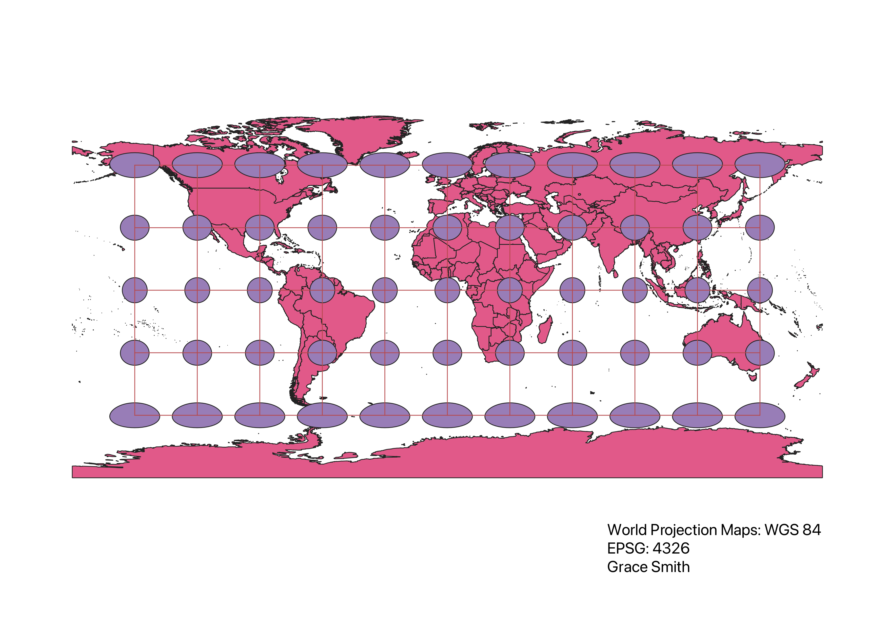
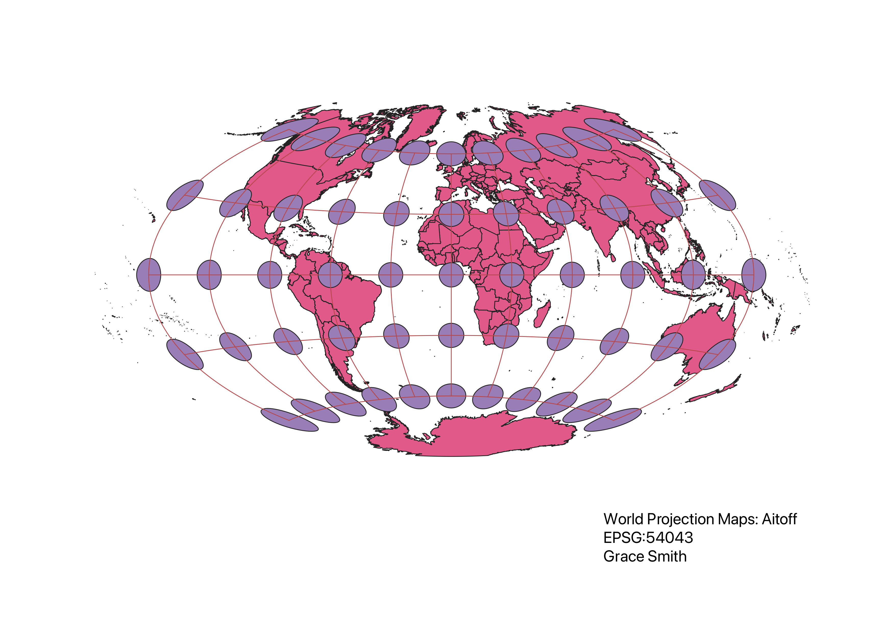
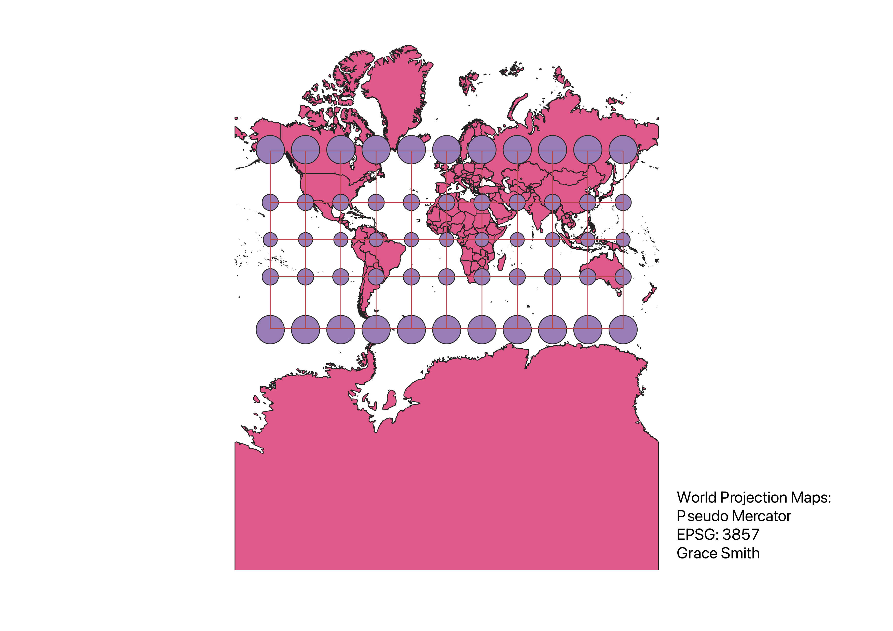
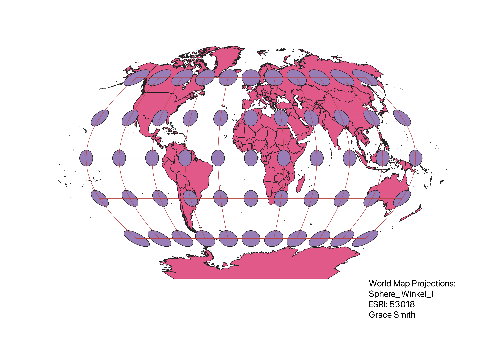
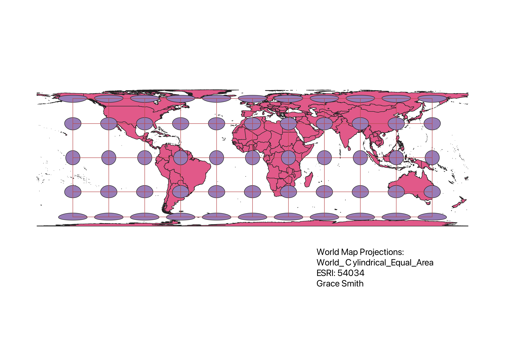
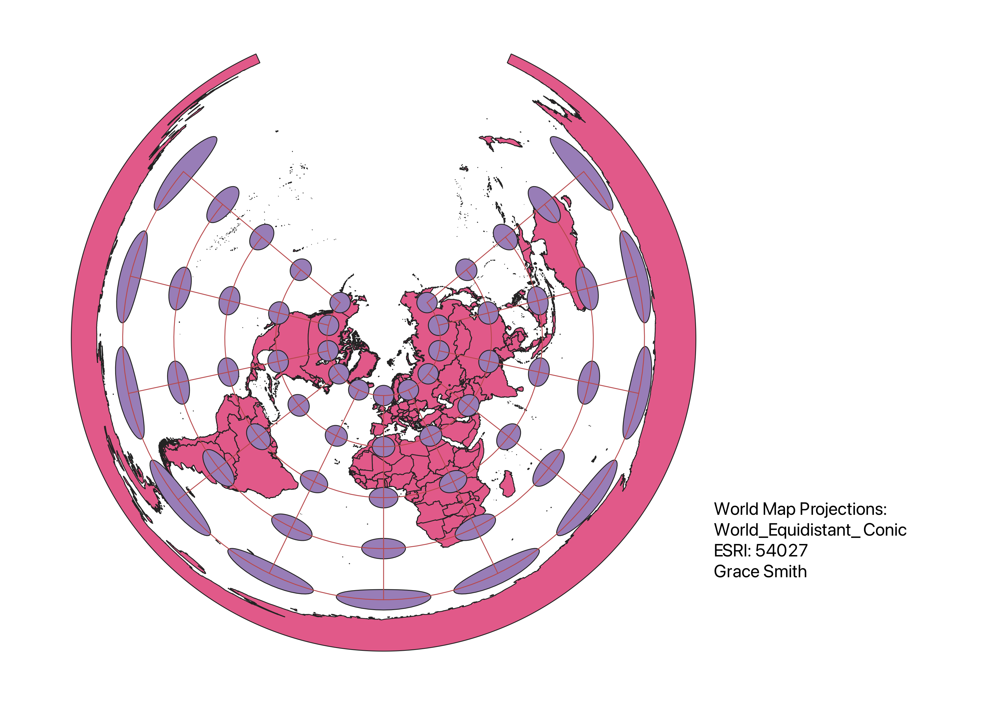
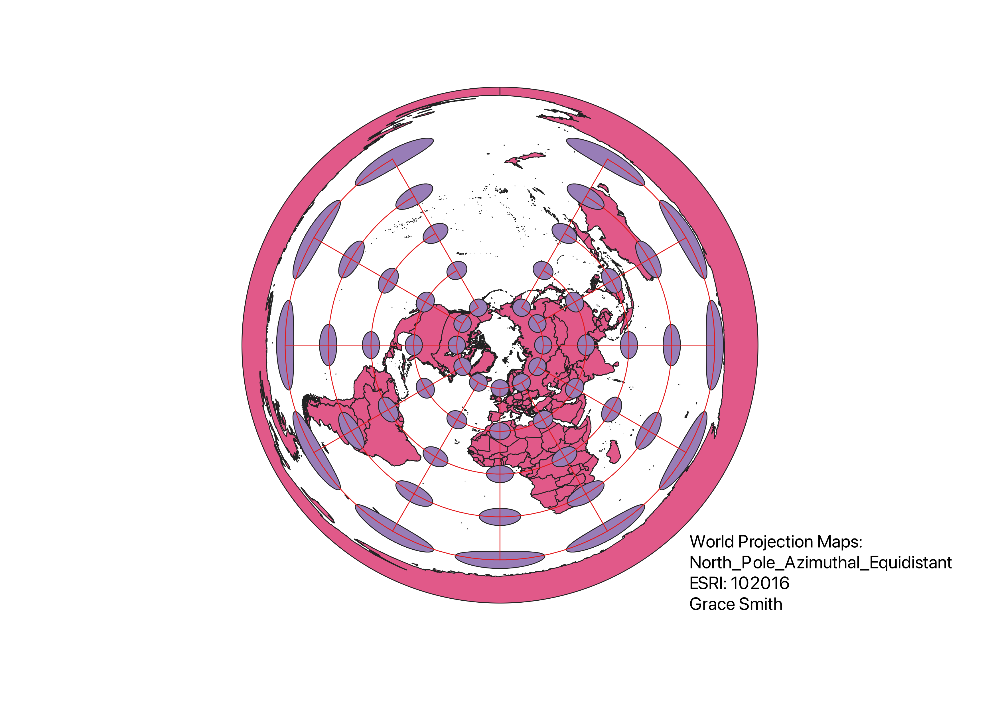
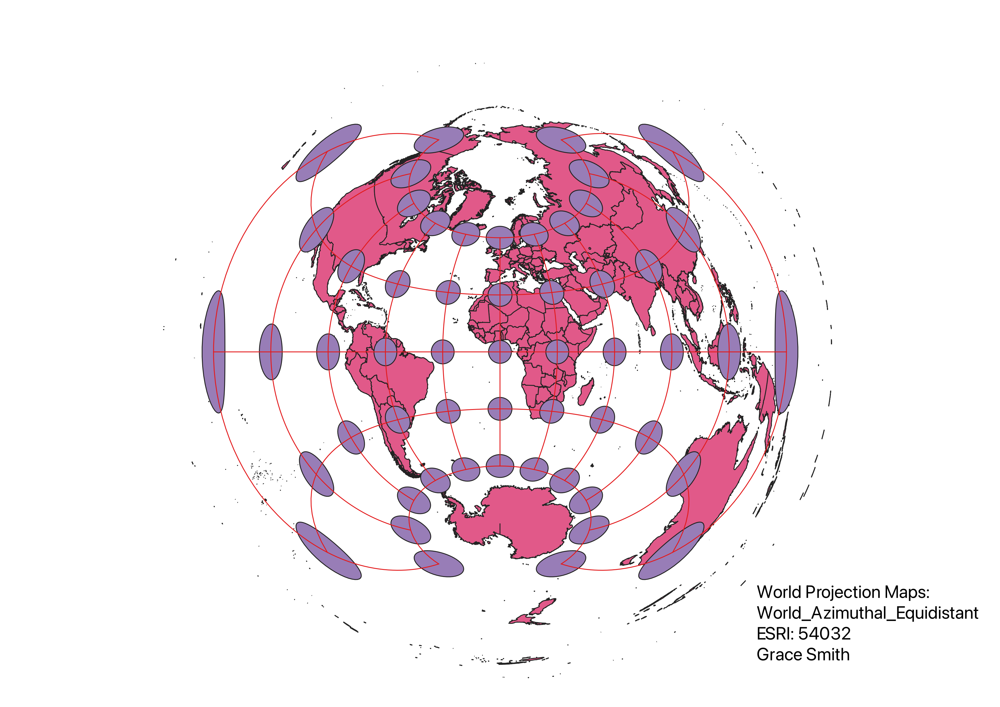
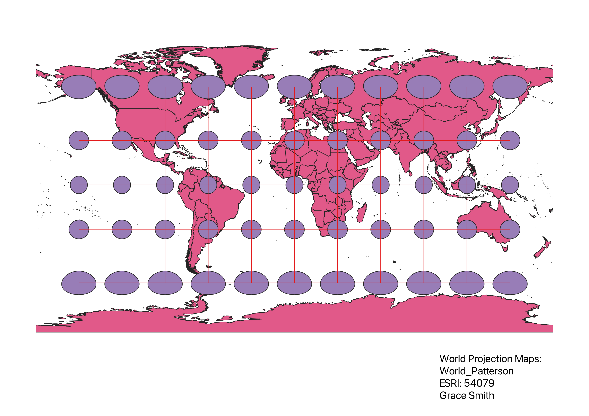

Homework 3 - World Projection Maps
For the purposes of Homework 3, I used different world projections in QGIS. In QGIS, I opened global contries data from Natural Data, as was provided on Sakai. I then used the Indicatrix mapper pluggin to put Tissot's indicatrix on the map. Then in project properties I changed the world projections to the ones listed below and downloaded them as png files before moving onto the next world projection. By looking at the different world projections, I was able to understand how they have strengths and weakness, particularly in how they warp and portray the different continents.
WGS84 Projection - EPSG: 4326
insert observations here

Aitoff Projection - EPSG: 54043
insert observations here

Pseudo Mercator - EPSG: 3857
insert observations here

Sphere_Winkel_I Projection - ESRI: 53018
insert observations here

World_Cylindrical_Equal_Area Projection - ESRI: 54034
insert observations here

World_Equidistant_Conic Projection - ESRI: 54027
insert observations here

North_Pole_Azimuthal_Equidistant Projection - ESRI: 102016
insert observations here

World_Azimuthal_Equidistant Projection - ESRI: 54032
insert observations here

World_Patterson Projection - ESRI: 54079
insert observations here
